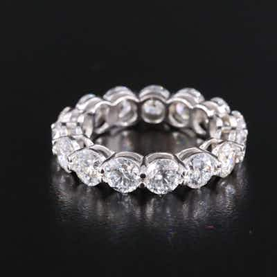

OUTPRICED14K 6.99 CTW Lab Grown Diamond Eternity Band
14K white gold eternity band set with round brilliant-cut lab-grown diamonds, ~6.99 CTW to
0 min left
Current bid$703 · 16 bids
Est. value$706
Your max bid$412
All-in at max$508
Projected close$703
Margin at bid−$138
Details & price history →